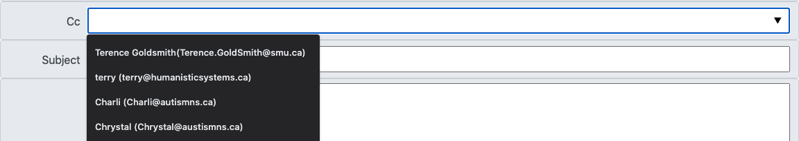

Cc stands for Carbon Copy. When you Cc someone to an email, you are sending them a copy of the email.
You should add someone in as a Cc if the email is not meant for them, but if it contains information they should know about.
For example, you could Cc your supervisor to let them know an action has been taken or to provide a record of communications.
It is important to not Cc too often, as it could become annoying and cumbersome to the person you are Cc-ing.
You CC someone in the same way you add someone to the To box. Either by typing in the CC box:

Or by selecting them from the drop down menu
